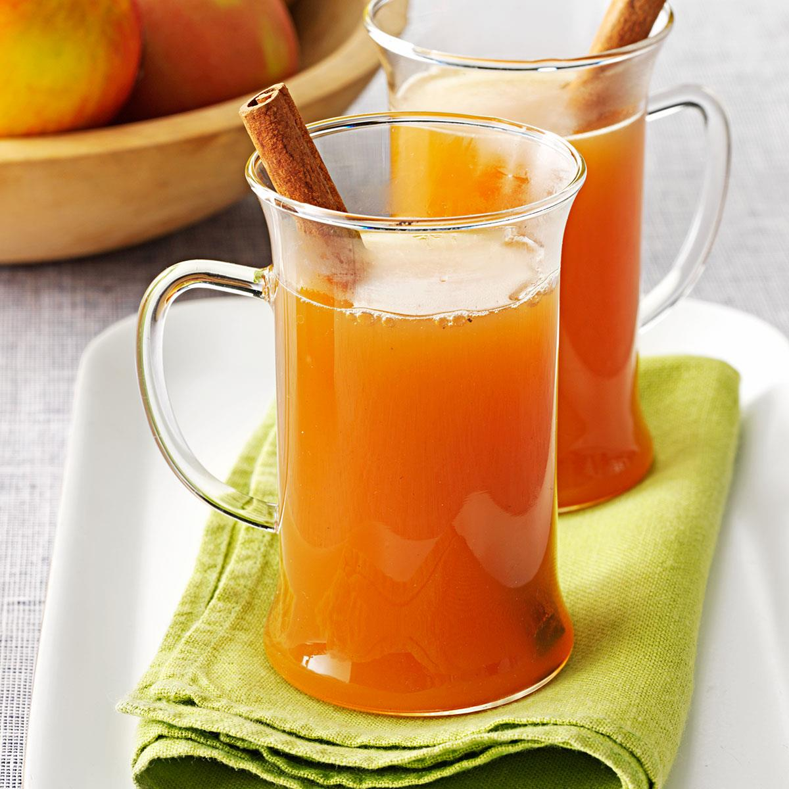

Hot Spiced Cider

Ingredients
- 1/2 gallon apple cider
- 8 whole cloves
- 3 sticks cinnamon
- juice and peels of two large oranges. Peels should be zested.
Steps
- In a saucepan, combine all ingredients
- Over medium heat, heat cider slowly until it begins to steam. If it boils, it becomes bitter
- Strain cider into mugs and serve hot, or chill to reheat the next day. Lasts about two days.